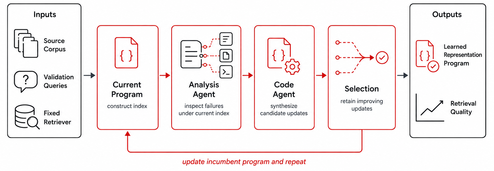

We present AutoIndex, a framework for learning representation programs: executable transformations that map raw documents into the representations exposed to a retrieval system. Rather than tuning retrievers, rerankers, or a small set of preprocessing hyperparameters, AutoIndex searches over programs that slice, enrich, normalize, reweight, or reorganize documents before indexing. At each iteration, agents diagnose failures of the current program and synthesize candidate updates, retaining only updates that improve retrieval quality under the resulting index. We evaluate on CRUMB, a benchmark of heterogeneous retrieval tasks, with BM25 held fixed across all experiments. The learned programs improve recall on all 8 tasks, with average gains of +8.4% Recall@100 and +8.3% nDCG@10, and largest gains of +30.5% and +43.6%. These results suggest that document representation should not be treated as a fixed preprocessing choice made before retrieval begins, but as an explicit optimization target.
Section 1 · Method
We formalize AutoIndex as black-box code synthesis over executable document-representation programs. Each iteration diagnoses where retrieval is failing, synthesizes candidate programs, rebuilds the index each induces, and selects against a validation objective. Two specialized agents separate diagnosis from code generation.

A read-only, tool-using agent (BM25 search, file read, grep) inspects why queries fail — grouping them into anchors, recall violations, and small-margin positives — and writes a grounded summary.
Conditioned on that diagnosis and the full search history, it proposes several executable programs that transform documents — stripping noise, reweighting sections, re-chunking.
Every candidate rebuilds the index and is scored on held-out validation Recall@100. Only real improvements survive; the search history stops the agent from repeating harmful edits.
Section 2 · Worked Example
On a LaTeX-heavy StackExchange article, the Analysis Agent found that repeated inline math was inflating chunks and diluting the natural-language terms BM25 relies on. The Code Agent responded with a narrow, threshold-gated strip_latex step. Scroll to watch the transformation propagate through the pipeline.
def preprocess(doc):
text = doc.text
if has_heavy_latex(text):
text = strip_latex(text)
return Chunk(text=text)
A different behavior emerges on TipOfTongue, where user queries describe concrete scenes but Wikipedia summaries stay abstract: AutoIndex learns to reweight Plot and Cast sections while preserving full-document context, raising the term frequency of query-relevant narrative without discarding evidence. These are corpus-specific strategies discovered by search — not one-off preprocessing tricks.
Section 3 · Results
We evaluate on CRUMB — eight complex retrieval tasks with long documents and heterogeneous evidence — holding BM25 fixed throughout. Bars show relative Recall@100 improvement over a full-document BM25 baseline, for both code-generation backbones. Hover any bar for its exact gain and underlying scores.
Recall@100 and nDCG@10 on held-out queries, vs. the BM25 full-document baseline. Selection is driven by Recall@100 alone — yet nDCG@10 improves alongside it, suggesting AutoIndex sharpens evidence quality, not just index size.
| Task | # Q | BM25 R@100 | AutoIndex | Δ R@100 | BM25 nDCG | AutoIndex | Δ nDCG |
|---|---|---|---|---|---|---|---|
| ClinicalTrial | 84 | 20.7 | 21.2 | +2.1% | 52.2 | 53.0 | +1.7% |
| CodeRetrieval | 2510 | 4.7 | 5.0 | +6.5% | 4.4 | 4.9 | +9.6% |
| LegalQA | 4569 | 55.1 | 60.8 | +10.4% | 16.4 | 23.4 | +42.5% |
| PaperRetrieval | 53 | 33.7 | 33.7 | +0.1% | 67.3 | 66.8 | −0.7% |
| SetOpEntity | 314 | 25.7 | 33.5 | +30.5% | 12.2 | 17.5 | +43.6% |
| StackExchange | 79 | 67.1 | 69.8 | +4.1% | 21.9 | 24.5 | +11.8% |
| TheoremRetrieval | 51 | 8.5 | 10.1 | +19.2% | 0.5 | 0.7 | +27.3% |
| TipOfTongue | 100 | 25.0 | 26.7 | +6.7% | 12.0 | 11.5 | −3.5% |
| Average | — | 30.1 | 32.6 | +8.4% | 23.4 | 25.3 | +8.3% |
Scores ×100, mean over 3 seeds. Bold-accent Δ marks relative gains ≥ 10%. The biggest wins land on TheoremRetrieval, SetOpEntity, and LegalQA — exactly where BM25 vocabulary mismatch leaves the most headroom.
Section 4 · Ablation Study
We isolate three design choices — iterative search, search history, and example-grounded analysis — reporting ΔRecall@100 vs. the BM25 full-document baseline (qwen3-coder). Removing any one meaningfully erodes performance, and the number of improved splits drops from 8/8 to as low as 4/8.
| Task | Full AutoIndex | 1 iteration | w/o history | w/o analysis |
|---|---|---|---|---|
| ClinicalTrial | +2.1% | −1.1% | −1.3% | +0.8% |
| CodeRetrieval | +6.5% | +0.4% | +9.0% | −0.2% |
| LegalQA | +10.4% | +1.6% | −8.1% | −8.2% |
| PaperRetrieval | +0.1% | +0.0% | −0.4% | +0.4% |
| SetOpEntity | +30.5% | +4.0% | +4.5% | −0.0% |
| StackExchange | +4.1% | +0.9% | +5.2% | +4.1% |
| TheoremRetrieval | +19.2% | +0.0% | +0.0% | +7.7% |
| TipOfTongue | +6.7% | −10.0% | +4.0% | +2.0% |
| Positive splits | 8 / 8 | 4 / 8 | 4 / 8 | 5 / 8 |
ΔRecall@100 relative to the BM25 full-document baseline. Full AutoIndex is the unablated pipeline (5 iterations, search history enabled). Accent values mark relative gains ≥ 10%.
Limiting AutoIndex to a single pass improves only 4 of 8 tasks. Useful programs usually require repeated analysis, proposal, and incumbent selection — this is search, not a one-shot rewrite.
Remove the Analysis Agent and most effect sizes collapse toward zero. Aggregate metric feedback alone is too weak; grounding in concrete retrieval failures is what makes synthesis reliable.
The running log of past attempts keeps the Code Agent from repeating brittle or previously harmful edits — dropping it causes the largest regression, on LegalQA (−8.1%).
Section 5 · Discussion
Across heterogeneous corpora, treating document representation as an explicit objective — rather than a fixed choice made before retrieval begins — improves BM25 retrieval without any retriever training, embedding updates, or online feedback. Once found, the learned program is applied at indexing time with no further LLM calls, and a preliminary probe suggests the representations may transfer beyond the retriever that produced them.
Limitations & future work. AutoIndex currently optimizes primarily for Recall@100 under a fixed BM25 retriever, with a limited iteration budget and a small number of seeds. This leaves open how reliably gains converge, and how to balance recall against nDCG, latency, index size, and preprocessing cost. Promising directions include program transfer (applying a learned program directly to unseen datasets), adaptive programs (that inspect or lightly calibrate on a new corpus before indexing), and optimizer transfer (tuning the AutoIndex procedure once, then freezing and evaluating it across many domains) — as well as extending beyond BM25 to dense, hybrid, learned-sparse, late-interaction, and reranking systems.
Cite
@article{autoindex2026, title = {AutoIndex: Learning Representation Programs for Retrieval}, author = {O'Nuallain, Sam and Rajkumar, Nithya and Narayanasamy, Ramya and Jiang, Hanna and Chaudhari, Shreyas and Drozdov, Andrew}, year = {2026}, note = {Preprint. Under review.} }